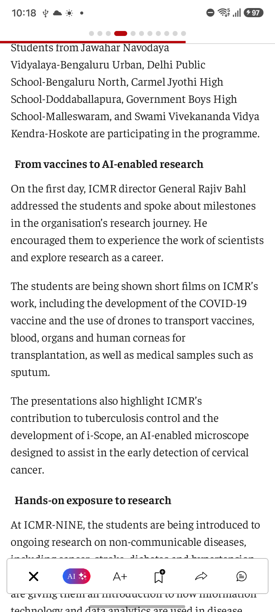
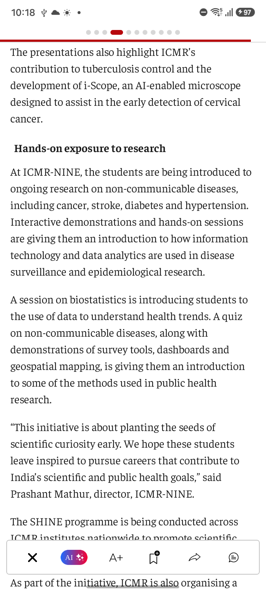
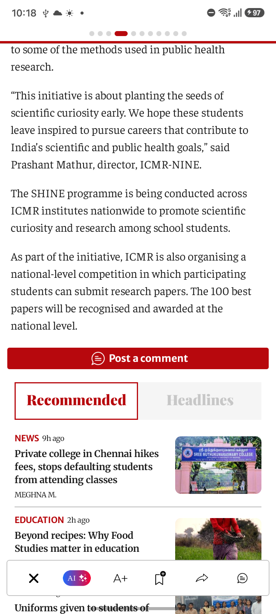
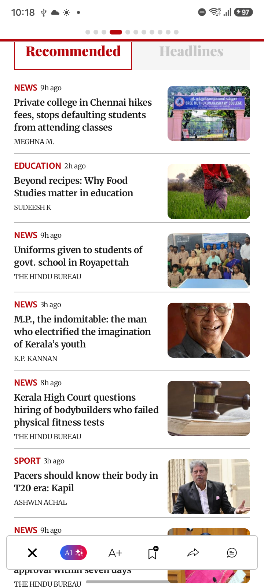
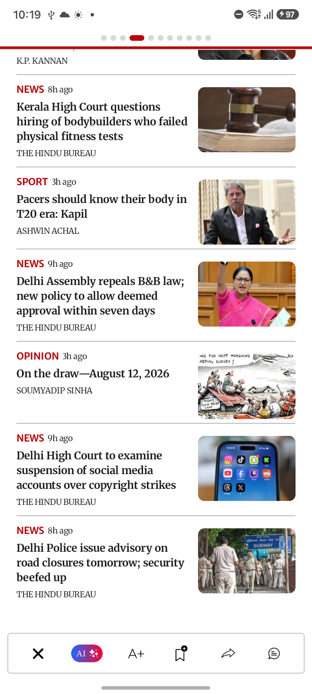

SC_80 — SC 80 World page article subsscribedAccount
Image: SC_80_World_Page_AI_Summary.png
Confidence: High Severity: LOW
Reason: All expected UI components are present and rendered correctly. No evidence of layout, rendering, or text issues.
Image: SC_80_World_Page_Subscribed_Account_Article_01.png
Confidence: High Severity: LOW
Reason: All expected UI components are present with no visible rendering, alignment, or text issues.
Image: SC_80_World_Page_Subscribed_Account_Article_02.png
Confidence: High Severity: LOW
Reason: All UI elements are rendered correctly. No visual defects present.

Image: SC_80_World_Page_Subscribed_Account_Article_03.png
Confidence: High Severity: LOW
Reason: All UI components are rendered, no overlapping, cropping, or blank regions inside content. The layout looks complete.

Image: SC_80_World_Page_Subscribed_Account_Article_04.png
Confidence: High Severity: LOW
Reason: All UI components appear fully rendered with no visible defects. The bottom overlay is correctly placed and no content is missing or overlapped.

Image: SC_80_World_Page_Subscribed_Account_Article_05.png
Confidence: High Severity: LOW
Reason: All expected UI components are rendered correctly without visible defects.

Image: SC_80_World_Page_Subscribed_Account_Article_06.png
Confidence: High Severity: LOW
Reason: All expected UI elements are present and rendered correctly. No visible layout, rendering, or text defects.

Image: SC_80_World_Page_Subscribed_Account_Article_07.png
Confidence: High Severity: LOW
Reason: All expected UI components are present and there are no visible layout or rendering defects.

Image: SC_80_World_Page_Subscribed_Account_Article_08.png
Confidence: High Severity: LOW
Reason: All expected UI components are present. No visible layout, rendering, or text issues detected.

Image: SC_80_World_Page_Subscribed_Account_Article_09.png
Confidence: High Severity: LOW
Reason: All UI components are fully rendered and correctly aligned. No visible defects detected.

Image: SC_80_World_Page_Subscribed_Account_Article_10.png
Confidence: High Severity: LOW
Reason: All expected UI components are present and rendered correctly. No visual defects detected.

Image: SC_80_World_Page_Subscribed_Account_Article_11.png
Confidence: High Severity: LOW
Reason: All expected UI components are present and rendered correctly without any visible defects.

Image: SC_80_World_Page_Subscribed_Account_Article_12.png
Confidence: High Severity: LOW
Reason: All expected UI components are visible and correctly rendered without any visual defects.

Image: SC_80_World_Page_Subscribed_Account_Article_13.png
Confidence: High Severity: LOW
Reason: All expected UI components are present and rendered correctly. No visual defects detected.
Image: SC_80_World_Page_Subscribed_Account_Article_14.png
Confidence: High Severity: LOW
Reason: All expected UI components are present and properly rendered with no visible defects.

Image: SC_80_World_Page_Subscribed_Account_Article_15.png
Confidence: High Severity: LOW
Reason: All expected UI components are present and completely rendered. No visible UI defects.

Image: SC_80_World_Page_Subscribed_Account_Article_16.png
Confidence: High Severity: LOW
Reason: All UI components are present and rendered correctly, no visible defects.

Image: SC_80_World_Page_Subscribed_Account_Article_17.png
Confidence: High Severity: LOW
Reason: All UI elements, images, and text are fully rendered without visible defects.
Image: SC_80_World_Page_Subscribed_Account_Article_18.png
Confidence: High Severity: LOW
Reason: All visible UI components are rendered correctly with no visual defects.

Image: SC_80_World_Page_Subscribed_Account_Article_19.png
Confidence: High Severity: LOW
Reason: All expected UI components are present and properly rendered; no visual defects detected.

Image: SC_80_World_Page_Subscribed_Account_Article_20.png
Confidence: High Severity: LOW
Reason: All expected UI components are rendered correctly. No visual defects or layout issues detected.

Image: SC_80_World_Page_Subscribed_Account_Article_21.png
Confidence: High Severity: LOW
Reason: All expected UI components are present and rendered correctly with no visible defects.
Image: SC_80_World_Page_Subscribed_Account_Article_22.png
Confidence: High Severity: LOW
Reason: All expected UI components are present and rendered correctly; no visual defects detected.

Image: SC_80_World_Page_Subscribed_Account_Article_23.png
Confidence: High Severity: LOW
Reason: All expected UI components are visible and correctly rendered. No visual defects detected.

Image: SC_80_World_Page_Subscribed_Account_Article_24.png
Confidence: High Severity: LOW
Reason: All UI components are present and rendered correctly. No visible UI defects.